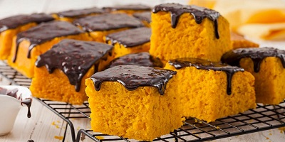

Receita - Bolo de Cenoura

Ingredientes
- Massas
- 1/2 xícara (chá) de óleo
- 3 cenouras médias raladas
- 4 ovos
- 2 xícara (chá) de açúcar
- 2 e 1/2 xícara de (chá) de farinha de trigo
- 1 colher (sopa) de fermento em pó
- Cobertura
- 3 colheres (sopa) de manteiga
- 3 colheres (sopa) de chocolate em pó
- 1 xícara (chá) de açúcar
- 1 xícara (chá) de leite
Modo de Preparo